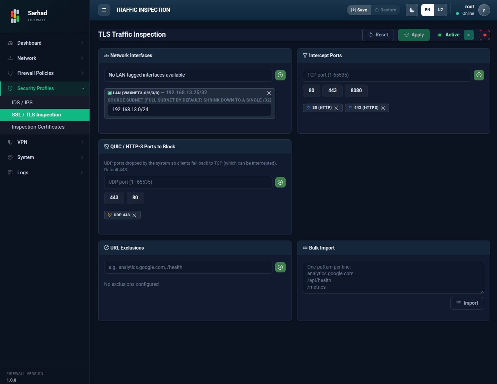

2. TLS trafigini tekshirish (TLS Interception)
Bugungi kunda internet trafigining katta qismi shifrlangan (HTTPS/TLS).
Bu xavfsizlikni oshiradi, biroq zararli dasturlar ham o’z aloqasini shu
shifr ostida yashirishi mumkin. TLS Interception funksiyasi shifrlangan
trafikni vaqtincha ochadi, tekshiradi va qaytadan shifrlaydi — natijada
IDS/IPS va filtrlash tizimlari shifrlangan trafik ichini ham ko’ra oladi.
Bu bo’limga o’tish uchun chap menyudagi Security → TLS Interception
bo’limini tanlang (/tls-interception).
2.1. Qanday ishlaydi
TLS Interception “o’rtadagi ishonchli vositachi” (man-in-the-middle) tamoyili asosida ishlaydi:
Mijoz qurilmasi HTTPS sayt bilan bog’lanishga harakat qiladi.
Sarhad NGFW bu ulanishni ushlaydi: mijozga o’z sertifikati bilan, haqiqiy saytga esa alohida ulanadi.
Trafik tizim ichida ochiladi va tekshiriladi, so’ngra qaytadan shifrlanadi.
Funksiya ishlashi uchun mijoz qurilmalariga tizimning CA sertifikati ishonchli sifatida o’rnatilgan bo’lishi shart (qarang: Tekshiruv sertifikatlari (Inspection Certificates)).
2.2. Sozlash
{kind=link}

TLS Interception sahifasiga o’ting va funksiyani yoqing (Enable).
Quyidagilarni sozlang:
Network Interfaces — tekshiriladigan LAN interfeyslarini tanlang. Har bir tanlangan interfeys uchun manba tarmoq (subnet) maydoni interfeysning o’z tarmog’i bilan avtomatik to’ldiriladi; kerak bo’lsa, uni o’zgartirib, aniq mijoz/manba tarmog’ini ko’rsating.
Intercept Ports — tekshiriladigan portlar (masalan,
443— HTTPS).QUIC block — QUIC (HTTP/3, UDP) portlarini bloklaydi. Bu brauzerlarni tekshirib bo’ladigan oddiy HTTPS (TCP) ga qaytishga majbur qiladi.
URL Exclusions — tekshiruvdan istisno qilinadigan URL yoki domenlar (masalan, bank yoki sog’liqni saqlash saytlari). Ko’p manzilni Bulk Import orqali bir vaqtda qo’shish mumkin.
O’zgarishlarni kuchga kiritish uchun Apply tugmasini bosing. Saqlanmagan o’zgarishlar “Unsaved changes” deb belgilanadi; ularni Reset tugmasi bilan bekor qilish mumkin.
Note
Trafikni qaytadan shifrlash uchun CA sertifikati kerak. CA sertifikati alohida sahifada yaratiladi va tekshiriladigan interfeyslarga biriktiriladi (qarang: Tekshiruv sertifikatlari (Inspection Certificates)).
Warning
TLS Interception maxfiylikka ta’sir qiluvchi sezgir funksiya. Uni yoqishdan oldin tashkilotingizning xavfsizlik siyosati va qonuniy talablarga rioya qilinayotganiga ishonch hosil qiling. Bank va sog’liqni saqlash kabi maxfiy saytlar trafigini tekshirishdan istisno qilish tavsiya etiladi.
Note
Ba’zi ilovalar sertifikatni qattiq tekshiradi (certificate pinning) va TLS Interception yoqilganda ishlamay qolishi mumkin. Bunday ilovalar uchun istisno (bypass) qoidalarini qo’shing.